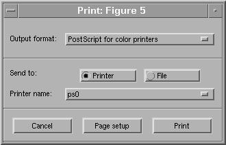

When the result presented in the render window looks appealing to you, it is time to print or save the result. Pressing the 'Print Image' button of the d3view command window or the "Extra Options" will bring up the usual 'printeasy' dialog, also used by many other programs at NRU:d3view Users tutorial (7): Printing and saving
